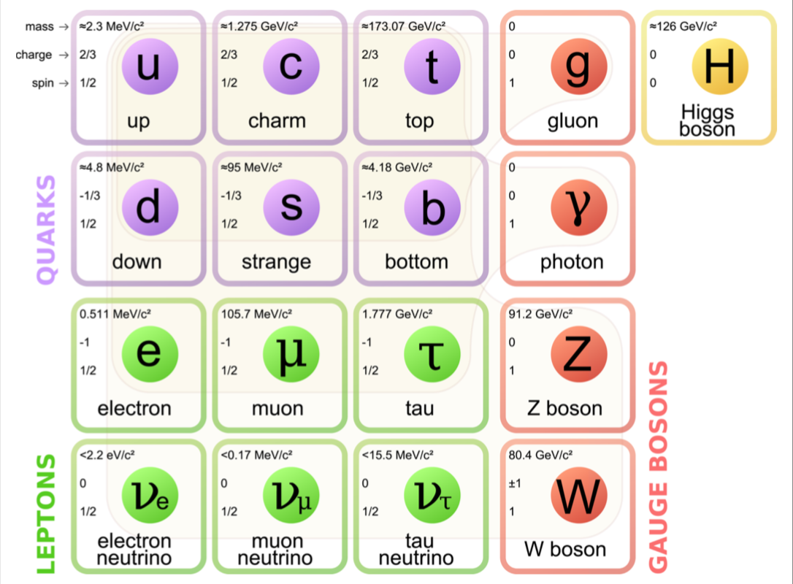

Brief intro to object-oriented programming
Using classes and objects for research code
Brief intro to object-oriented programming
Classes: organize data, methods, and functions
Objects: manifestations of classes
We can use object-oriented programming to cleanly organize behaviors and data in our code.
Object Orientation
It provides a framework for classifying distinct concepts into comprehensible sizes. These smaller conceptual units facilitate cleaner, more scalable modeling.
Object Orientation
- Classes and objects combine functions with data to make both easier to manage.
- A class defines the behaviors of a new kind of thing, while an object is a particular thing.
- Classes have constructors that describe how to create a new object of a particular kind.
- An interface describes what an object can do; an implementation defines how.
- One class can inherit from another and override just those things that it wants to change.
Object Orientation
- Encapsulation is the property of owning data
- Inheritance establishes a relationship hierarchy between models
- Polymorphism allows for models to customize their own behavior even when they are based on other models
Objects
Everything in Python is an object.
All objects in Python have attributes and methods.
Object example: integers
a = 1
help(a) # gives info about the object
dir(a) # gives list of data and behaviors associated with classObject example: integers
a = 1
help(a) # gives info about the object
dir(a) # gives list of data and behaviors associated with classWhat do double underscores around __abs__ mean?
From PEP8: “magic objects or attributes that live in user-controlled namespaces. E.g., __init__, __import__, or __file__. Never invent such names; only use them as documented.”
Generally don’t call dunder methods directly; instead, use built-in functions.
… what about functions?
import math
dir(math.sin)Even functions are objects!

Classes
What about classes?
Classes define logical collections of attributes and methods describing a kind of object, and how to create objects of that kind.
Choose classes to encapsulate internal data and functions for different types of objects.
Example: particle physics
class Particle(object):
"""A particle is a constituent unit of the universe."""
# class body definition hereWhat else do classes include?
- Class variables
- Constructors
- Methods
Elementary particles

Class variables
Data universally applicable to all objects of the class
# contents of particle.py
class Particle(object):
"""A particle is a constituent unit of the universe."""
# class body definition here
roar = "I am a particle!"# import particle module
import particle as p
print(p.Particle.roar)# create instance of Particle
import particle as p
higgs = p.Particle()
print(higgs.roar)Class variables can get a bit confusing; if you modify the variable associated with an object, it becomes an instance variable. For example:
class Particle(object):
spin = 0
def init(self, charge, mass):
self.charge = charge
self.mass = massHere, spin is a class variable while charge and mass are instance variables. Creating two particles:
p1 = Particle(1, 1)
p2 = Particle(-1, 1)
print(p1.spin)
print(p2.spin)we’ll get
0
0If we change spin for p1 only, it modifies the value just for that instance:
p1.spin = 0.5
print(p1.spin)
print(p2.spin)giving
0.5
0However, in general spin is still a class variable, and we can modify it for the whole class:
Particle.spin = -0.5
print(p1.spin)
print(p2.spin)which gives
0.5
-0.5So, for p1, spin has become an instance variable, but p2 still points to the class variable.
Instance variables
Data with different values for each instance of the class
Example: particle position.
import particle as p
# create empty list to hold observed particle data
obs = []
# append first particle
obs.append(p.Particle())
# assign its position
obs[0].r = {'x': 100.0, 'y': 38.0, 'z': -42.0}
# append second particle and assign its position
obs.append(p.Particle())
obs[1].r = {'x': 0.01, 'y': 99.0, 'z': 32.0}
# print positions of each particle
print(obs[0].r)
print(obs[1].r)Instance variables
Using instance variables, we can store all data associated with a particle observation (position, mass, charge, spin, etc.) without much more complexity
(Hopefully the value of this reduced complexity is obvious.)
How to accomplish in class definition? Constructor: __init()__ function.
Constructors
Constructor: __init__() function, executed upon instantiation of object.
Constructor not required; every class inherits default constructor from object.
Tip: good to initialize all instance variables in constructor, to ensure they are initialized when you need them.
# particle.py
class Particle(object):
"""A particle is a constituent unit of the universe.
Attributes
----------
c : charge in units of [e]
m : mass in units of [kg]
r : position in units of [meters]
"""
roar = "I am a particle!"
def __init__(self):
"""Initializes the particle with default values for charge c, mass m, and position r.
"""
self.c = 0
self.m = 0
self.r = {'x': 0, 'y': 0, 'z': 0}self argument required since function is method; binds to specific instance of the class.
More efficient: specify data values upon initialization:
# particle.py
class Particle(object):
"""A particle is a constituent unit of the universe.
Attributes
----------
c : charge in units of [e]
m : mass in units of [kg]
r : position in units of [meters]
"""
roar = "I am a particle!"
def __init__(self, charge, mass, position):
"""Initializes the particle with supplied values for charge c, mass m, and position r.
"""
self.c = charge
self.m = mass
self.r = positionMethods
Methods: functions tied to a class definition; may operate on data contained by object.
# particle.py
class Particle(object):
"""A particle is a constituent unit of the universe.
Attributes
----------
c : charge in units of [e]
m : mass in units of [kg]
r : position in units of [meters]
"""
roar = "I am a particle!"
def __init__(self, charge, mass, position):
"""Initializes the particle with supplied values for charge c, mass m, and position r.
"""
self.c = charge
self.m = mass
self.r = position
def hear_me(self):
"""Print information about particle.
"""
myroar = self.roar + (
" My charge is: " + str(self.c) +
" My mass is: " + str(self.m) +
" My x position is: " + str(self.r['x']) +
" My y position is: " + str(self.r['y']) +
" My z position is: " + str(self.r['z']))
print(myroar)Example: proton
from scipy import constants
import particle as p
m_p = constants.m_p
r_p = {'x': 1, 'y': 1, 'z': 53}
a_p = p.Particle(1, m_p, r_p)
a_p.hear_me()Methods can alter instance variables. Example: Quark class with instance variable flavor.
def flip(self):
"""Flip quark's flavor to complementary flavor.
"""
if self.flavor == "up":
self.flavor = "down"
elif self.flavor == "down":
self.flavor = "up"
elif self.flavor == "top":
self.flavor = "bottom"
elif self.flavor == "bottom":
self.flavor = "top"
elif self.flavor == "strange":
self.flavor = "charm"
elif self.flavor == "charm":
self.flavor = "strange"
else:
raise AttributeError("The quark cannot be flipped, because the flavor is invalid.")from quark import Quark
t = Quark()
t.flavor = "top"
t.flip()
print(t.flavor)Particle capture relationship between uncertainty in momentum and uncertainty in position:
\[ \Delta x \Delta p_x \geq \frac{\hbar}{2} \]
from scipy import constants
class Particle(object):
"""A particle is a constituent unit of the universe.
# ... other parts of class definition ...
def delta_x_min(self, delta_p_x):
"""Returns minimum possible value of Δx
"""
hbar = constants.hbar
delx_min = hbar / (2.0 * delta_p_x)
return delx_minStatic methods
Example: Quark class can include function that lists all possible values of flavor; possible values are static irrespective of specific instance.
def possible_flavors():
return ["up", "down", "top", "bottom", "strange", "charm"]Use @staticmethod decorator to define a method not bound to object.
class Particle(object):
"""A particle is a constituent unit of the universe.
"""
# ... other parts of class definition ...
@staticmethod
def possible_flavors():
return ["up", "down", "top", "bottom", "strange", "charm"]Duck typing
“When I see a bird that walks like a duck and swims like a duck and quacks like a duck, I call that bird a duck.”
Meaning: Python does not explicitly check for object types like other languages. It only checks for behavior when a method is called or attribute accessed.
If different object types both “quack like a duck”, then it treats them like a duck. An object does not need to be of a certain type in order for its methods to be invoked; must merely possess those method.
Example: all particles with a valid c attribute for charge can be used identically.
def total_charge(particles):
"""Calculate the total charge of a collection of particles.
"""
tot = 0
for p in particles:
tot += p.c
return totp = Proton()
e1 = Electron()
e2 = Electrion()
particles = [p, e1, e2]
total_charge(particles)# overrule duck typing when inconvenient
def total_charge(particles):
"""Calculate the total charge of a collection of particles.
"""
tot = 0
for p in particles:
if isinstance(p, Particle):
tot += p.c
return totPolymorphism
When class inherits attributes of a parent class. General rule: what works for parent class should work for subclass (plus specialized behavior).
# elementary.py
class ElementaryParticle(Particle):
"""No distinct constituent particles, have spin.
"""
def __init__(self, spin):
self.s = spin
self.is_fermion = bool(spin % 1.0)
self.is_boson = not self.is_fermion# composite.py
class CompositeParticle(Particle):
"""Particles like protons and neutrons, composed of elementary particles
but don't share attributes.
"""
def __init__(self, parts):
self.constituents = partsSubclasses
ElementaryParticle and CompositeParticle are Particle objects, and thus have (inherit) all of the functions and data of the original class.
We can override that data and those behaviors if desired.
# elementary.py
class ElementaryParticle(Particle):
"""No distinct constituent particles, have spin.
"""
roar = "I am an Elementary Particle!"
def __init__(self, spin):
self.s = spin
self.is_fermion = bool(spin % 1.0)
self.is_boson = not self.is_fermionfrom elementary import ElementaryParticle
p = ElementaryParticle(1.5)
p.s
p.hear_me()Superclasses
Any class, including a subclass, can be a superclass or parent class; the subclass inherits from its parent.
ElementaryParticle can also be a superclass:
class Quark(ElementaryParticle):
"""No distinct constituent particles, have spin.
"""
def __init__(self, color, charge, color_charge, spin, flavor):
self.color = color
self.charge = charge
self.color_charge = color_charge
self.spin = spin
self.flavor = flavorInheritance of class contructors
Best/most Pythonic way of handling inherited + additional constructor arguments: be explicit.
# particle.py
class Particle(object):
"""A particle is a constituent unit of the universe.
"""
roar = "I am a particle!"
def __init__(self, charge, mass, position):
"""Initializes the particle with supplied values for charge c, mass m, and position r.
"""
self.c = charge
self.m = mass
self.r = position
def hear_me(self):
"""Print information about particle.
"""
myroar = self.roar + (
" My charge is: " + str(self.c) +
" My mass is: " + str(self.m) +
" My x position is: " + str(self.r['x']) +
" My y position is: " + str(self.r['y']) +
" My z position is: " + str(self.r['z']))
print(myroar)# elementary.py
class ElementaryParticle(Particle):
"""No distinct constituent particles, have spin.
"""
roar = "I am an Elementary Particle!"
def __init__(self, charge, mass, position, spin):
super().__init__(charge, mass, position)
self.s = spin
self.is_fermion = bool(spin % 1.0)
self.is_boson = not self.is_fermionMetaprogramming
When definition of a class or function is specified (in part or in full) by code outside the definition itself.
Example: add an is_particle class attribute to Particle class:
def add_is_particle(cls):
cls.is_particle = True
return cls
@add_is_particle
class Particle(object):
"""A particle is a constituent unit of the universe.
# ... other parts of class definition ...Practical example
Take a look at my code PyTeCK, which uses classes to hide lots of details of performing simulations: https://github.com/kyleniemeyer/PyTeCK